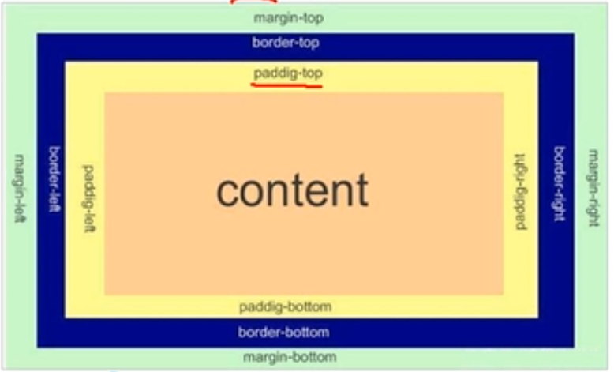

border边框
content内容
padding内边距
margin外边距
盒子的内容和边框的距离 盒子的内容和边框的距离 盒子的内容和边框的距离 盒子的内容和边框的距离 盒子的内容和边框的距离 盒子的内容和边框的距离 盒子的内容和边框的距离 盒子的内容和边框的距离 盒子的内容和边框的距离 盒子的内容和边框的距离 盒子的内容和边框的距离 盒子的内容和边框的距离 盒子的内容和边框的距离 盒子的内容和边框的距离 盒子的内容和边框的距离 盒子的内容和边框的距离 盒子的内容和边框的距离 盒子的内容和边框的距离 盒子的内容和边框的距离
盒子的内容和边框的距离 盒子的内容和边框的距离 盒子的内容和边框的距离 盒子的内容和边框的距离 盒子的内容和边框的距离 盒子的内容和边框的距离 盒子的内容和边框的距离 盒子的内容和边框的距离 盒子的内容和边框的距离 盒子的内容和边框的距离 盒子的内容和边框的距离 盒子的内容和边框的距离 盒子的内容和边框的距离 盒子的内容和边框的距离 盒子的内容和边框的距离 盒子的内容和边框的距离 盒子的内容和边框的距离 盒子的内容和边框的距离 盒子的内容和边框的距离